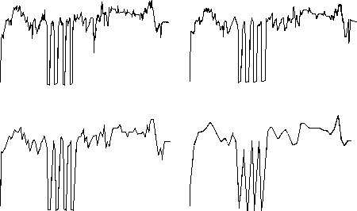

| In 1991 the Hsus took a different approach. |
| Assuming a fractal structure for music, supported by their earlier work, the Hsus note an implication of self-similarity: "a musical composition could be represented by a music score of a different scale, using half, a quarter, or twice as many notes as were written by the composer." |
| Noting that their fractal character implies no definite length for coastlines, the Hsus ask "If a coastline has no definite length, could we state that Mozart's music has no definite number of notes or note intervals?" |
| (Recall Emperor Joseph's comment to Mozart, that Abduction from the Seraglio was heavenly, but had too many notes. Perhaps Emperor Joseph anticipated the fractal nature of music. Probably not.) |
| They tested this hypothesis on Bach's Invention no. 1 in C Major. |
| To understand the motivation, first convert the notes to a graph. |
| Taking f0 = 60 Hz, the note j intervals above f0 has frequency fj given by fj/f0 = (15.9/15)j. |
| In this way, an integer j is assignd to each note, and the graph of a composition is the plot of j (vertically) versus i (horizontally), where fj is the frequency of the ith note. |
| Such a plot gives a very jagged graph, and the Hsus observed that similar graphs made with every second note, or with every fourth note, and so on, of the original still sound remarkably Bach-like. |
| This suggested a method for making new Bach-like compositions: "start with a 1/32 eduction of Bach and ... build the composition up into an alternative score, according to the theory of music harmony." |
| Here are the graph of the original, the 1/2, 1/4 and 1/8 reduction of BWV 772 of Bach. |
|  |
Return to Kenneth and Andrew Hsu.